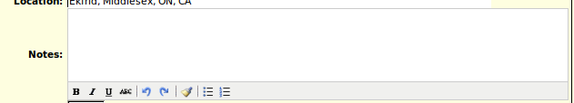
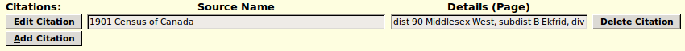

Home: Genealogy: Services: Nominal Index: Individual: Edit Individual:
There are many different types of events or facts that can be recorded in the database. In most cases these are updated using the common event dialog that is documented by this page. The exact set of input fields presented by the dialog depends upon the nature of the event or fact. For example some facts only support a block of text, while others have multiple pieces of information.
Although facts and events are accessed through the same interface there is a significant difference between them. An event is something that happened at a specific moment in time that changed the state of the individual or individuals involved. A fact is something that was observed to be true at some time, but was actually true over a period of time. For example the marriage event changes the status of each of the partners from single to married, and the status of their relationship from engaged to married. The fact that the couple are married may be observed at any time between the marriage event and the death or divorce event.
The title of the page provides general information about the type of fact or event and the individual or individuals that it applies to. Individual facts or events are associated with a particular individual. Marriage facts or events are usually associated with a pair of individuals. The name of an individual in the title is implemented as a hyper-link to the main page for that individual.
Although some common events, such as birth, death, or marriage, will present this dialog with the event type already selected, when you add or edit most events you are prompted to identify the type of event with a selection list of possibilities. In many cases you can even change the type of an already existing event. For example you could change a place of residence event into an occupation event. The exact set of fields that you are then presented with in the dialog depends upon which event type you select from this list.
For most events you can enter the date of the event. This text field supports a broad range of options. It is suggested that common dates be entered as numeric day of the month, name or abbreviation of the name of the month, and year. For a more complete description of what can be entered and how it is interpreted see Help on Entering Dates.
Since a fact is true over a period of time the associated date may be of the form "from first-date to second-date". On the other hand an event occurs at some specific moment in time which may not be accurately known, so the associated date for the event may be "between first-date and second-date".
For many events you can enter a description. The meaning of this field depends upon the event, however basically it is anything that is not part of the name of location where the event took place. For example for an "Occupation" event the description includes the job title, and optionally the name of the business or employer.
You may identify the location where the event took place or the fact was observed. Each location in this application is actually a reference to a member of the location table. The text you enter is used to find or create an instance in this table. The search is done ignoring the case of letters, and matches either on the full name or the short name of the location, although the full name is always displayed in reports.
When you finish typing in the location field, indicated by for example tabbing to the next field or using the mouse to click in another field, the text you have typed is used to search the location table for a match. The application looks first for a unique match on either the full or short name for a location and if one is found the full name replaces the entered value. If this search fails then a search is made for location names that start with the supplied text. If one match is found then that location name replaces the entered value. If more than one match is found then a selection list appears under the input text field giving you the option of selecting the best match. Note that even after the application has filled in the value you do not have to accept it as is. For example say you want to record that an event took place at a specific location in Westminster township. You can type in "westminster". When you leave the field this is replaced by the full location name associated with that string, for example "Westminster, Middlesex, ON, CA". You then go back into the field and insert the specific location at the front. In addition most browsers keep track of past values that you have entered in a particular field and present you with previous values that are similar to what you have entered any time you pause in typing. So if you have previously specified that an event took place in "Westminster, Middlesex, ON, CA" that value may be presented to you if you pause after typing "west".
There is special support for the family related sacraments of the Church of Jesus Christ of Latter Day Saints. Where a sacrament takes place in a temple the location field is replaced by a selection list of the temples.
Some LDS sacraments may alternatively take place outside of a temple. In this case the dialog will include a line that provides a choice between a temple and a general location.
Textual notes are entered into a multiple line text area: 
You can enter thousands of characters of text into such a field, however the total amount of text of all notes fields on an individual is limited to about 60,000 characters. Pressing the Enter key while editing this field starts a new paragraph in the input field, it does not cause the form to be submitted as happens on most forms if you press Enter in a text input field. The field supports highlighting text as bold, italic, struck through, or underlined, as well as the creation of bulleted or numbered lists.
However going overboard on text formatting can detract from the legibility of the generated web pages.
If there is an extended note field associated with the fact or event then an extra button appears at the bottom of the form. Clicking on this button, or using the keyboard short-cut Alt-C while any other input field or button has the focus, erases the contents of the note. However if the text field itself has the focus you must use the common user interface sequence Ctrl-A (to select all of the text in the field) Ctrl-X (to cut the selection).
The next section of the page documents the source citations that support the event. 
There is one summary row for each existing citation. This consists of:
After the list of existing citations there is an button. Clicking on adds a new row to the list of citations. This row initially displays a scrolling selection list of all of the defined sources, and a text input field to identify the source details, that is the place in the master source containing the documentation, usually the page number.
The button may be disabled when this web page is first displayed, until you supply an event type by selecting from the selection list of event types. The Add Citation button is also disabled while adding a citation so you cannot add a second citation until you have finished entering the first. The dialog also supports a keyboard shortcut of alt-A to add a citation.
When you request to add a new citation the last source that you cited is pre-selected for you, and the last page cited defaults to the last value you entered. This facilitates citing the last referenced document for multiple facts.
To accept the last citation just tab from the selection list of sources, and then tab out of the cited page field.
To change the citation click on the new master source, tab into the cited page field, change the value and then press enter or tab to confirm the change.
To add a citation to a new source, that is one that has not yet been referenced in the family tree, scroll up the master source selection list to the first entry, which reads "Add New Source" and click on that row. A short-cut for that action is simply to press the "A" key while the focus is on the selection list. Either action pops up a dialog to create the new master source.
When you complete the citation by leaving the page input field, the appearance of the new citation is changed to match the existing defined citations, and the button is re-enabled. The button acquires the focus.
Clicking on the button with the mouse, or pressing the Enter key while the button has the focus, updates the event, and closes the dialog. The keyboard shortcuts alt-U and ctrl-S may also be used to update the event. In most cases updating an event results in changes to the dialog which initiated the event update.
For additional assistance hold the mouse over a field or press the F1 key while a field has the focus and popup help is displayed relevant to that field.